전자기기기능사 (2015-04-04 기출문제)
1과목: 전기전자공학
1. 다음 중 증폭회로를 구성하는 수동소자에서 자유전자의 온도에 의하여 발생하는 잡음은?
- 산탄 잡음
- 열잡음
- 플리커 잡음
- 트랜지스터 잡음
(정답률: 79%)

2. 전원주파수가 60[Hz]일 때 3상 전파정류회로의 리플 주파수는?
- 90[Hz]
- 120[Hz]
- 180[Hz]
- 360[Hz]
(정답률: 70%)
3. 회로에서 입력단자와 출력단자가 도통되는 상태는?
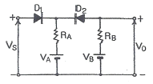
- VS＞VA, VS＜VB
- VS＞VA, VS＞VB
- VS＜VA, VS＞VB
- VS＜VA, VS＜VB
(정답률: 67%)
4. JK 플립플롭의 J입력과 K입력을 묶어서 1개의 입력 형태로 변경한 것은?
- RS 플립플롭
- D 플립플롭
- T 플립플롭
- 시프트 레지스터
(정답률: 77%)
5. 트랜지스터가 스위치로 ON/OFF 기능을 하고 있다면 어떤 영역을 번갈아 가면서 동작하는가?
- 포화 영역과 차단 영역
- 활성 영역과 포화 영역
- 포화 영역과 항복 영역
- 활성 영역과 차단 영역
(정답률: 69%)
6. 수정발진기의 특징 중 가장 큰 장점은?
- 발진이 용이하다.
- 주파수 안정도가 높다.
- 발진세력이 강하다.
- 소형이며 잡음이 적다.
(정답률: 80%)
7. 3단자 레귤레이터의 특징이 아닌 것은?
- 입력 전압이 출력 전압보다 높다.
- 방열이 필요 없다.
- 회로의 구성이 간단하다.
- 전력 손실이 높다.
(정답률: 72%)
8. 다음 중 펄스의 시간적 관계의 기본 조작이 아닌 것은?
- 정형
- 선택
- 비교
- 변이
(정답률: 56%)
9. UJT를 이용한 기본 발진회로일 때 발진주기 τ는? (단, η는 스탠드 오프비이다.)
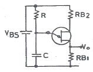
- τ = RC
- τ = 0.69RC
- τ = 2.3RCㆍlog(
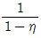
) - τ = RCㆍlog(
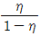
)
(정답률: 63%)
10. 그림과 같은 2단 궤환 증폭회로에서 궤환전압 Vf은?
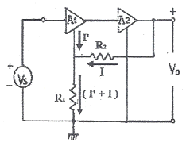
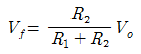
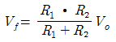
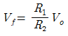
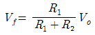
(정답률: 49%)
11. 그림과 같은 4개의 콘덴서회로의 합성 정전용량은 얼마인가? (단, 각 콘덴서의 값은 4[㎌]이다.)
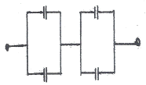
- 4[㎌]
- 8[㎌]
- 12[㎌]
- 16[㎌]
(정답률: 74%)
12. 어떤 정류회로의 무부하 시 직류 출력전압이 12[V]이고, 전부하 시 직류 출력전압이 10[V]일 때 전압변동률은?
- 5[%]
- 10[%]
- 20[%]
- 40[%]
(정답률: 76%)
13. 입력 전압이 500[mV]일 때 5[V]가 출력되었다면 전압 증폭도는?
- 9배
- 10배
- 90배
- 100배
(정답률: 74%)
14. 그림과 같은 발진기에서 A점과 B점의 파형을 옳게 나타낸 것은?
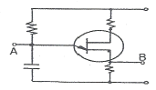
- A : 펄스, B : 펄스
- A : 톱니파, B : 펄스
- A : 톱니파, B : 톱니파
- A : 펄스, B : 톱니파
(정답률: 73%)
15. 저항 20[Ω]인 도체에 100[V]의 전압을 가할 때, 그 도체에 흐르는 전류는 몇 [A]인가?
- 0.2
- 0.5
- 2
- 5
(정답률: 85%)
2과목: 전자계산기일반
16. 반도체의 다수캐리어로 옳게 짝지어진 것은?
- P형의 정공, N형의 전자
- P형의 정공, N형의 정공
- P형의 전자, N형의 전자
- P형의 전자, N형의 정공
(정답률: 84%)
17. CPU의 내부 동작에서 실행하고자 하는 명령의 번지를 지정한 후 명령 레지스터에 불러오기까지의 기간은?
- 명령 사이클(Instruction cycle)
- 기계 사이클(Machine cycle)
- 인출 사이클(Fetch cycle)
- 실행 사이클(Execution cycle)
(정답률: 67%)
18. 불 대수에서 하나의 논리식과 다른 논리식 사이에서 AND는 OR로, OR은 AND로, 0은 1로, 1은 0으로 변환하는 원리는?
- 쌍대의 원리
- 불 대수의 원리
- 드모르간의 원리
- 교환법칙의 원리
(정답률: 63%)
19. 사칙연산 명령이 내려지는 장치는?
- 입력장치
- 제어장치
- 기억장치
- 연산장치
(정답률: 60%)
20. 연산 결과가 영인지 음인지, 또는 자리올림(carry)이나 오버플로(overflow)가 발생했는지를 기억하는 장치는?
- 가산기(adder)
- 누산기(accumulator)
- 데이터 레지스터(data register)
- 상태 레지스터(status register)
(정답률: 64%)
21. 마이크로프로세서를 구성하고 있는 버스에 해당하지 않는 것은?
- 데이터 버스
- 번지 버스
- 제어 버스
- 상태 버스
(정답률: 52%)
22. 데이터의 구성 체계에 속하지 않는 것은?
- 비트
- 섹터
- 필드
- 레코드
(정답률: 79%)
23. 16진수 (5C)16을 10진수로 변환하면?
- 72
- 86
- 92
- 96
(정답률: 70%)
24. 어떤 마이크로프로세서가 1100 0110 0101 1110의 주소 버스를 점하고 있다. 이 상태는 메모리의 몇 page에 출입하고 있는 것인가?
- 37
- 124
- B53C
- C65E
(정답률: 75%)
25. 불 대수의 표현이 올바른 것은?
- A + 1 = 1
- Aㆍ1 = 1
- AㆍA = 1
- A + A = 1
(정답률: 73%)
26. F=(A, B, C, D)=∑(0, 1, 4, 5, 13, 15)이다. 간략화하면?
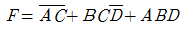
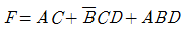
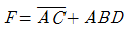
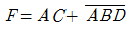
(정답률: 54%)
27. 전자계산기의 특징이 아닌 것은?
- 기억하는 능력이 크다.
- 창의적 능력이 있다.
- 계산은 빠르고 정확하다.
- 논리적 판단 및 비교능력이 있다.
(정답률: 87%)
28. 배타적(Exclusive) OR 게이트를 나타내는 논리식은?
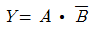
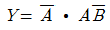
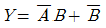
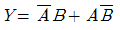
(정답률: 73%)
29. Q-미터를 사용하여 측정하는데 적당하지 않는 것은?
- 절연저항
- 코일의 실효저항
- 코일의 분포용량
- 콘덴서의 정전용량
(정답률: 59%)
30. 균등눈금을 갖고 상용 주파수에 주로 사용하며 두 코일의 전류 사이에 전자력을 이용하여 단상 실효 전력의 직접 측정에 많이 사용되는 전력계는?
- 직류 적산 전력계
- 교류 적산 전력계
- 진공관 전력계
- 전류력계형 전력계
(정답률: 74%)
3과목: 전자측정
31. 오실로스코프에서 측정하고자 하는 신호를 인가하는 단자로 맞는 것은?
- 수평축 단자
- 수직축 단자
- 외부동기 신호단자
- X-Y축 단자
(정답률: 56%)
32. 지시계기의 구비 조건의 설명으로 틀린 것은?
- 절연 내력이 낮을 것
- 튼튼하고 취급이 편리한 것
- 눈금이 균등하든가 대수 눈금일 것
- 확도가 높고, 외부의 영향을 받지 않을 것
(정답률: 73%)
33. 충전된 두 물체 간에 작용하는 정전흡인력 또는 반발력을 이용한 계기는?
- 정전형 계기
- 유도형 계기
- 전류력계형 계기
- 가동코일형 계기
(정답률: 58%)
34. 고주파수 측정에서 직렬공진회로의 주파수 특성을 이용한 것은?
- 동축 주파수계
- 공동 주파수계
- 흡수형 주파수계
- 헤테로다인 주파수계
(정답률: 49%)
35. 지시계기의 제어장치 중 교류용 적산전력계에 대표적으로 사용되는 제어 방법은?
- 스프링 제어
- 중력 제어
- 전기적 제어
- 맴돌이 전류 제어
(정답률: 70%)
36. 정전용량이나 유전체의 손실각의 측정에 사용되는 브리지는?
- 맥스웰 브리지
- 헤비사이드 브리지
- 헤이 브리지
- 셰링 브리지
(정답률: 72%)
37. 1[kW]의 출력을 갖는 신호 발생기의 출력에 10[dB]의 감쇠기 2대를 연결하여 사용하면 최종 출력은?
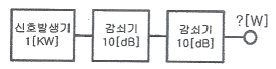
- 1[W]
- 10[W]
- 100[W]
- 10[mW]
(정답률: 61%)
38. 250[V]인 전지의 전압을 어떤 전압계로 측정하여 보정 백분율을 구하였더니 0.2이었을 때 전압계의 지시값은?
- 250.5
- 250.2
- 249.5
- 249.8
(정답률: 56%)
39. 디지털 측정에서 파형의 변화가 빠른 고주파 신호의 변환을 필요로 할 때 A/D 변환기와 함께 사용되는 것은?
- 파형 정형 회로
- 샘플 홀드 회로
- 슈미트 트리거 회로
- 입력파형 비교 회로
(정답률: 51%)
40. 클램프미터(후크미터)의 주된 특징은?
- 임피던스 측정이 가능하다.
- 절연저항 측정이 가능하다.
- 교류전류 측정이 가능하다.
- 직류전류 측정이 가능하다.
(정답률: 49%)
41. 콘(cone)형 다이내믹 스피커의 특성에 대한 설명으로 옳은 것은?
- 현재 중ㆍ고음용으로 가장 널리 사용된다.
- 비교적 넓은 주파수대를 재생할 수 있다.
- 능률이 높고 지향성이 강하나 저음특성이 나쁘다.
- 재생음이 투명하고 섬세하나 큰소리 재생에는 불합리하다.
(정답률: 62%)
42. 회로의 어떤 부분에 있어서 신호전력과 잡음전력의 크기의 비를 무엇이라고 하는가?
- Noise Factor
- SNR
- Distion Rate
- Modulation Rate
(정답률: 69%)
43. 초음파 가습기, 초음파 세척기는 초음파의 어떤 현상을 이용하여 만든 것인가?
- 응집
- 소나(SONAR)
- 히스테리시스
- 캐비테이션(cavitation)
(정답률: 67%)
44. 다음 그림에서 LR 회로의 입ㆍ출력 전압비 (V0/Vi)는? (단,
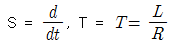
)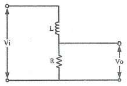
- G(S)=(1+ST)K
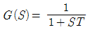
- G(S)=1-ST
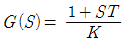
(정답률: 72%)
45. 다음 중 가로 800픽셀, 세로 600픽셀, 픽셀당 16비트인 디지털 영상의 크기는 얼마인가?
- 480KB
- 960KB
- 21KB
- 12KB
(정답률: 64%)
4과목: 전자기기 및 음향영상기기
46. 전자 편향형 브라운 관의 전자빔 진행 방향을 수정하여 래스터의 위치를 조절하기 위한 링 모양의 자석을 무엇이라고 하는가?
- 센터링 마그네트
- 편향 코일
- AGC전압
- 튜너
(정답률: 62%)
47. 디지털 LCD TV에서 전체 화면이 무지개색으로 나올 경우 그 고장증상은?
- 인버터 회로 불량
- 영상보드 회로 불량
- 백 라이트 불량
- 패널 TAP칩 불량
(정답률: 59%)
48. 유도 가열은 어떤 원리를 이용하여 가열하는 방식인가?
- 전압손
- 유전체손
- 맴돌이 전류손
- 히스테리시스손
(정답률: 64%)
49. 제어계의 방식에 따른 제어용 증폭기에 속하지 않는 것은?
- 전기식
- 유압식
- 기계식
- 공기식
(정답률: 54%)
50. 오디오미터(audiometer)는 어떤 의료기기에 이용되는가?
- 청력계(귀) 사용
- 맥파계(맥동) 사용
- 안진계(눈) 사용
- 심음계(청진기) 사용
(정답률: 81%)
51. 원거리용에 사용되는 레이더(Radar)의 주파수는 몇 [GHz]인가?
- 3[GHz]
- 9[GHz]
- 25[GHz]
- 30[GHz]
(정답률: 51%)
52. 테이프 레코더 구성 요소에서 모터에 의해 일정한 스피드로 회전하는 축은 어느 것인가?
- 테이크업 릴
- 가이드 롤러
- 핀치 롤러
- 캡스턴
(정답률: 69%)
53. 목표값이 변화하나 그 변화가 알려진 값이며 예정된 스케줄이 따라 변화하는 제어 방식은?
- 정치제어
- 추치제어
- 수동제어
- 프로그램제어
(정답률: 55%)
54. 그림과 같은 되먹임계의 관계식 중 옳은 것은?
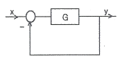
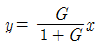
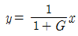
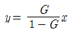
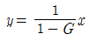
(정답률: 60%)
55. TV 송신안테나의 전력을 100[W]에서 200[W]로 올리면 같은 지점에서 전계강도는 얼마로 변하는가?
- 약 1.4배
- 약 1.5배
- 약 1.6배
- 약 1.7배
(정답률: 50%)
56. 물질에 빛을 비춤으로써 기전력이 발생하는 현상은?
- 광방전 효과
- 광전도 효과
- 광전자 방출 효과
- 광기전력 효과
(정답률: 74%)
57. CD-ROM, DVD-ROM 등의 광학 드라이브 장치에서 디스크면에 기록된 부분이 일정한 시간에 일정한 거리를 움직이도록 하는 방식은?
- 헤드 일정(CHV)
- 각속도 일정(CAV)
- 선속도 일정(CLV)
- 회전속도 일정(CRV)
(정답률: 48%)
58. 유기발광 다이오드(OLED)에 대한 설명 중 잘못된 것은?
- 자연광에 가까운 빛을 내고, 에너지 소비량도 적다.
- 전자냉동기는 펠티에 효과를 이용한 것이다.
- 화질 반응속도가 TFF-LCD보다 느려, 동영상 구현 시 잔상이 거의 없다.
- 두께와 무게를 LCD의 3분의 1로 줄일 수 있는 차세대 평판 디스플레이다.
(정답률: 66%)
59. 전력증폭기 출력단자에서 출력되는 음성전압이 10[V]이고 스피커 부하저항이 8[Ω]일 때 출력은 몇 [W]인가?
- 10[W]
- 12.5[W]
- 15[W]
- 17.5[W]
(정답률: 71%)
60. 적외선 센서의 설명으로 옳지 않은 것은?
- 자동이득 제어장치는 자동으로 에코를 조절한다.
- 리젝션은 강한 에코의 자동 조절을 하여 경계면을 선명하게 하는 회로이다.
- 아웃풋은 초음파를 출력하는 곳이다.
- 게인 컨트롤은 에코 증폭량을 조절한다.
(정답률: 54%)